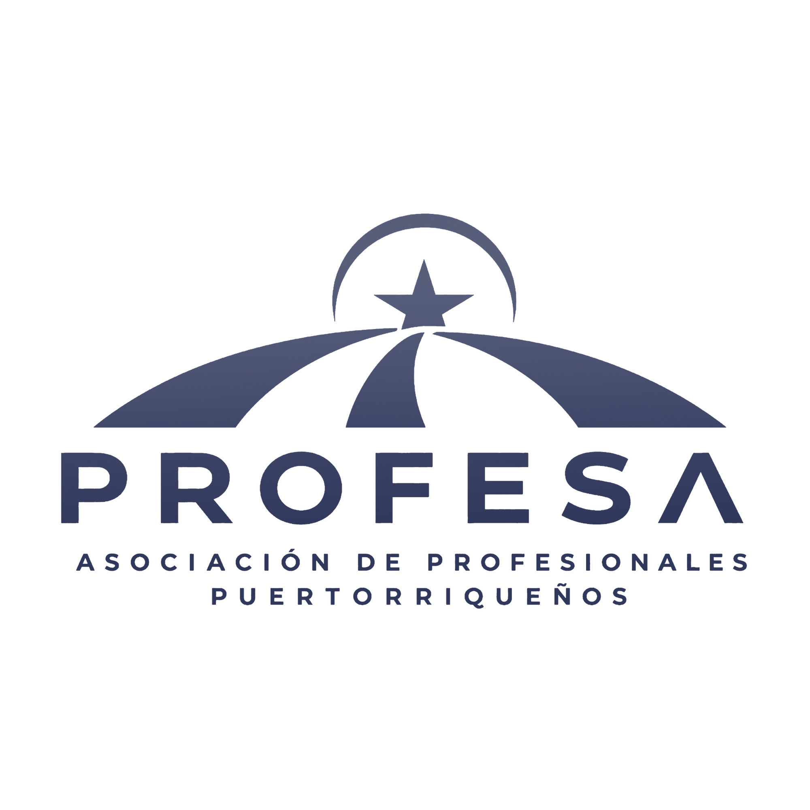

Desde Estados Unidos y Puerto Rico conectamos empresas con talento verificado de comunidades afectadas por desastres, para crear ingresos que sostienen familias a largo plazo. Y cuando llega la emergencia, coordinamos la respuesta con organizaciones verificadas.
From the United States and Puerto Rico we connect businesses with vetted talent from disaster-affected communities, creating income that sustains families for the long term. And when emergency strikes, we coordinate the response with verified organizations.
La ayuda de emergencia alimenta una semana. Un ingreso recurrente sostiene a una familia todo el año: en moneda fuerte, cobrado en plataformas internacionales, fuera del alcance de cualquiera. Por eso conectamos freelancers verificados de comunidades afectadas con empresas que necesitan talento, y patrocinadores con espacios de trabajo seguros dentro de las zonas afectadas.
Emergency aid feeds a family for a week. Recurring income sustains a family all year: in hard currency, paid on international platforms, out of anyone's reach. That is why we connect vetted freelancers from affected communities with businesses that need talent, and sponsors with safe work spaces inside the affected areas.
Identidad, portafolio, entrevista y referencias.
Identity, portfolio, interview, and references.
Empezando por los negocios de nuestra propia red profesional.
Starting with the businesses of our own professional network.
Contrato y pago directo entre empresa y freelancer, en plataformas establecidas. PROFESA no interviene en el pago.
Contract and payment directly between business and freelancer, on established platforms. PROFESA is not involved in payment.
Freelancers verificados trabajando desde ya para clientes en el exterior, con lo que tienen a mano.
Vetted freelancers working right now for clients abroad, with what they have on hand.
Patrocinadores financian puestos, equipos e internet en espacios existentes verificados (coworkings, universidades, salones comunitarios), pagando directo al operador local.
Sponsors fund seats, equipment, and internet at verified existing spaces (coworkings, universities, community halls), paying the local operator directly.
Empresas patrocinadoras construyen o habilitan centros completos junto a un operador local verificado, que es quien los posee y administra.
Sponsor companies build or outfit full centers with a verified local operator, who owns and runs them.
Estamos construyendo el registro; te contactaremos cuando abra. PROFESA no es agencia de empleo, no cobra comisión y no procesa pagos. Verificamos, presentamos y documentamos.
We are building the registry; we will contact you when it opens. PROFESA is not an employment agency, charges no commission, and processes no payments. We verify, introduce, and document.
Esto es lo que hay detrás de la respuesta desde el primer día.
This is what stands behind the response from day one.
Los contadores de impacto (organizaciones verificadas, necesidades atendidas, conexiones realizadas) se publican en vivo en esta página a medida que la respuesta avanza. Transparencia desde el día uno.
Impact counters (verified organizations, needs met, connections made) are published live on this page as the response advances. Transparency from day one.
Somos la capa de coordinación entre quienes necesitan ayuda y quienes pueden darla.
We are the coordination layer between those who need help and those who can give it.
Organizamos la respuesta para que nada se duplique ni se pierda.
We organize the response so nothing is duplicated or lost.
Cada organización es verificada por la red PROFESA antes de publicarse.
Every organization is verified by the PROFESA network before publishing.
Cruzamos necesidades verificadas con recursos disponibles. Nuestro equipo aprueba cada conexión.
We match verified needs with available resources. Our team approves every connection.
Cada acción queda registrada con estado, responsable y evidencia.
Every action is logged with status, owner, and evidence.
La confianza empieza por decir claramente lo que no somos.
Trust starts with saying clearly what we are not.
Seis pasos, con un proceso claro y personas aprobando cada decisión.
Six steps, with a clear process and people approving every decision.
Detrás de esta plataforma hay una red real de profesionales.
Behind this platform is a real network of professionals.

PROFESA es la Asociación de Profesionales Puertorriqueños del sur de la Florida: más de 80 ingenieros, médicos, abogados, educadores, empresarios y especialistas en tecnología. Sabemos lo que es ver a nuestra tierra necesitar ayuda, y sabemos lo que la diáspora organizada puede lograr. PROFESA Response Network nació para eso: poner la experiencia profesional de nuestra red al servicio de las comunidades que más lo necesitan, con orden, verificación y transparencia.
PROFESA is the Puerto Rican Professionals Association of South Florida: more than 80 engineers, doctors, attorneys, educators, entrepreneurs, and technology specialists. We know what it is to see our homeland in need, and we know what an organized diaspora can achieve. The PROFESA Response Network was born for exactly that: putting our network's professional expertise at the service of the communities that need it most, with order, verification, and transparency.
"La ayuda desorganizada se pierde. La ayuda coordinada transforma. Eso es lo que esta red sabe hacer."
"Disorganized help gets lost. Coordinated help transforms. That is what this network knows how to do."
president@profesafl.comLa insignia de verificada no se regala. Este es el proceso que pasa cada organización antes de publicarse.
The verified badge is not given away. This is the process every organization goes through before publishing.
La organización se registra con sus datos, contactos y documentos.
The organization registers with its details, contacts, and documents.
Un miembro de la red PROFESA avala a la organización personalmente.
A member of the PROFESA network personally vouches for the organization.
Revisamos documentos y hablamos directamente con la organización.
We review documents and speak directly with the organization.
Solo entonces recibe la insignia de verificada y se publica.
Only then does it receive the verified badge and get published.
Nada sin verificar se presenta como verificado. Los estados son siempre visibles: pendiente, en revisión, verificada.
Nothing unverified is ever presented as verified. States are always visible: pending, under review, verified.
Una iniciativa de coordinación liderada desde el sur de la Florida para conectar organizaciones verificadas, empresas, voluntarios profesionales y aliados que apoyan la recuperación en Venezuela.
A coordination initiative led from South Florida to connect verified organizations, businesses, professional volunteers, and partners supporting recovery efforts in Venezuela.
Una clínica en la zona afectada registra que necesita energía para operar. Una empresa del sur de la Florida ofrece 10 sistemas de baterías portátiles. El sistema detecta la coincidencia y la presenta al equipo. Un coordinador la revisa y la aprueba. PROFESA presenta a las dos partes. La empresa entrega los equipos DIRECTAMENTE a la clínica, sin intermediarios de fondos. Cada paso queda documentado y el avance se publica en esta página.
A clinic in the affected area registers that it needs power to operate. A South Florida business offers 10 portable battery systems. The system detects the match and presents it to the team. A coordinator reviews and approves it. PROFESA introduces the two parties. The business delivers the equipment DIRECTLY to the clinic, with no funds intermediary. Every step is documented and progress is published on this page.
Una organización comunitaria en Caracas registra que necesita apoyo de salud mental para familias afectadas. Tres psicólogos de nuestra red, uno en Miami, uno en Orlando y uno en San Juan, ofrecen sesiones virtuales semanales. El equipo aprueba la conexión y las sesiones empiezan la misma semana. Sin envíos, sin aduanas, sin esperas. Gran parte de la ayuda más valiosa es profesional y remota: medicina, ingeniería, educación, traducción, asesoría legal.
A community organization in Caracas registers that it needs mental health support for affected families. Three psychologists from our network, one in Miami, one in Orlando, and one in San Juan, offer weekly virtual sessions. The team approves the connection and sessions begin the same week. No shipping, no customs, no waiting. Much of the most valuable help is professional and remote: medicine, engineering, education, translation, legal guidance.
Un equipo pequeño y comprometido coordina esta respuesta. La plataforma organiza el trabajo pesado; tú mantienes el orden humano. No necesitas ser técnico. Es un compromiso a largo plazo: la recuperación toma meses, no días.
A small, committed team coordinates this response. The platform organizes the heavy lifting; you keep it human. You do not need to be technical. This is a long-term commitment: recovery takes months, not days.
Dirige el equipo y revisa el tablero a diario.
Runs the team and reviews the board daily.
~20-30 min/díaRecibe necesidades y confirma organizaciones.
Receives needs and confirms organizations.
~2-4 h/semanaBusca empresas y profesionales que puedan ayudar.
Finds businesses and professionals who can help.
~2-4 h/semanaPublica avances y mantiene la transparencia.
Posts progress and keeps it transparent.
~2-3 h/semanaLa red que hace posible la respuesta.
The network that makes the response possible.
Las preguntas que cualquier persona seria debería hacer.
The questions any serious person should ask.
Por diseño. Cuando una organización coordina Y maneja fondos al mismo tiempo, la transparencia se complica. Nosotros elegimos un solo rol: coordinar. Todo apoyo financiero o material va directo de quien lo da a la organización verificada que lo recibe. Así cada quien puede verificar exactamente a dónde fue su ayuda.
By design. When an organization coordinates AND handles funds at the same time, transparency gets complicated. We chose a single role: coordinating. All financial or material support goes directly from the giver to the verified organization that receives it. That way everyone can verify exactly where their help went.
Ninguna organización se publica sin pasar el proceso de verificación: registro con documentos, aval personal de un miembro de la red PROFESA, revisión directa y contacto. Los estados de verificación son siempre visibles. Si algo dice "pendiente", lo verás como pendiente.
No organization is published without passing the verification process: registration with documents, personal vouching by a PROFESA network member, direct review, and contact. Verification states are always visible. If something says "pending," you will see it as pending.
Nada financiero. PROFESA es una asociación de profesionales y esta es nuestra misión: poner nuestra experiencia al servicio de la comunidad. Lo único que buscamos ganar es lo que se gana haciendo esto bien: confianza, y una comunidad más fuerte.
Nothing financial. PROFESA is a professional association and this is our mission: putting our expertise at the service of the community. The only thing we seek to gain is what you gain by doing this well: trust, and a stronger community.
Sí. Muchas de las necesidades se pueden atender de forma remota: ingeniería, salud mental, traducción, tecnología, asesoría legal y más. También puedes ofrecer recursos desde cualquier lugar. La coordinación es digital; la ayuda no tiene código postal.
Yes. Many needs can be met remotely: engineering, mental health, translation, technology, legal guidance, and more. You can also offer resources from anywhere. Coordination is digital; help has no zip code.
Tu oferta entra al registro y se compara con las necesidades verificadas. Cuando hay una coincidencia, un coordinador la revisa y la aprueba. Entonces te presentamos directamente con la organización, y ustedes acuerdan la logística entre sí. Cada paso queda documentado.
Un dato útil: las ayudas que más rápido llegan son los servicios profesionales remotos, la compra local dentro de la zona afectada y los envíos a través de aliados que ya tienen canales de importación establecidos.
Your offer enters the registry and is compared against verified needs. When there is a match, a coordinator reviews and approves it. Then we introduce you directly to the organization, and you agree on logistics between yourselves. Every step is documented.
A useful note: the help that arrives fastest is remote professional services, local purchasing inside the affected area, and shipments through partners who already have established import channels.
Verificamos la identidad, el portafolio y las referencias de cada freelancer antes de presentarlo. Cuando una empresa quiere contratar, hacemos la presentación y de ahí en adelante todo es directo entre ustedes: contrato, condiciones y pago, a través de plataformas establecidas de trabajo freelance. PROFESA no es agencia de empleo, no cobra comisión a ninguna de las partes y nunca procesa pagos. Un ingreso recurrente es la ayuda más duradera que existe.
We verify each freelancer's identity, portfolio, and references before introducing them. When a business wants to hire, we make the introduction and from there everything is direct between you: contract, terms, and payment, through established freelance platforms. PROFESA is not an employment agency, charges no commission to either side, and never processes payments. Recurring income is the most durable help there is.
Igual que todo lo demás: conexión directa. PROFESA verifica al operador local (registro, visita en video, referencias) y presenta al patrocinador. El patrocinador financia los puestos, los equipos o el centro pagándole directamente al operador, que es quien posee y administra el espacio. PROFESA nunca compra, alquila, construye ni opera propiedades. Verifica, conecta y documenta el impacto. Así el espacio queda en manos de la comunidad que lo usa.
The same way as everything else: direct connection. PROFESA verifies the local operator (registration, video walkthrough, references) and makes the introduction. The sponsor funds the seats, equipment, or center by paying the operator directly; the operator owns and runs the space. PROFESA never buys, leases, builds, or operates property; it verifies, connects, and documents the impact. That keeps the space in the hands of the community that uses it.
Comparte esta página. Cada persona que la vea es una conexión potencial para las comunidades que apoyamos.
Share this page. Every person who sees it is a potential connection for the communities we support.
Ofrecer ayuda ahoraOffer help now